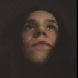

PHOTOGRAPHY / BURSA
Şehrin içinden
hikâyeler.
Street, documentary & portrait photography.
Çalışmaları gör
SELECTED WORK
Portfolyo


Buradaki görseller örnektir. Kendi fotoğraflarını yüklediğinde galeri tamamen senin çalışmalarınla değiştirilebilir.
ABOUT

Fotoğraf,
anı görünür kılar.
ASYHZRBNW, şehir hayatını, insanları ve gündelik anları fotoğraf aracılığıyla belgeleyen bağımsız bir fotoğrafçı portfolyosudur.
Çalışmalar; street, documentary ve portrait fotoğrafçılığı etrafında şekillenir. Bursa merkezli görsel hikâyeler ve kişisel projeler burada bir araya gelir.
Instagram'da takip et ↗CONTACT
Bir proje konuşalım.
Çekim, iş birliği veya fotoğraf projeleri için Instagram üzerinden ulaşabilirsin.
@asyhzrbnw